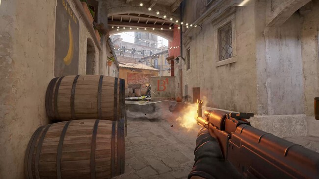
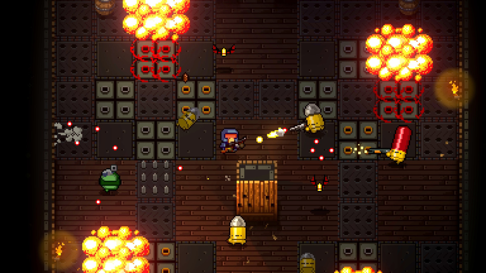
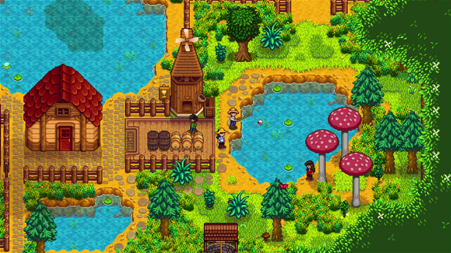

Juegos Online
Counter Strike 2
Durante las dos últimas décadas, Counter Strike ha proporcionado una experiencia competitiva de primer nivel para los millones de jugadores de todo el mundo que contribuyeron a darle forma. Ahora el próximo capítulo en la historia de CS está a punto de comenzar. Hablamos de Counter Strike 2.
ConsígueloLeague Of Legends

League of Legends es un juego de estrategia por equipos en el que dos equipos conformados por cinco poderosos campeones se enfrentan para destruir la base del otro. Elige de entre más de 140 campeones para realizar jugadas épicas, asegurar asesinatos y destruir torretas mientras avanzas hacia la victoria.
ConsígueloJuegos Indie
Enter the Gungeon
Enter the Gungeon es un dungeon crawler de tiroteos que sigue a una banda de marginados arrepentidos en su intento de conseguir la absolución personal a base de disparar, saquear, dar volteretas y voltear mesas para alcanzar el tesoro supremo de la legendaria Armazmorra.
ConsígueloStardew Valley
Acabas de heredar la vieja parcela agrícola de tu abuelo de Stardew Valley. Decides partir hacia una nueva vida con unas herramientas usadas y algunas monedas. ¿Te ves capaz de vivir de la tierra y convertir estos campos descuidados en un hogar próspero?
Consíguelo